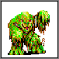
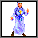
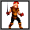
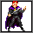
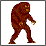
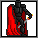
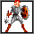
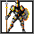
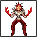

-Terror's Martyr

|  | Slime Ghast |
| Level: | 5 |
| Hit Points: | 75 |
| Armor: | 5 |
| Melee Skill: | 10 |
| Speed: | 4 |
| Abilities: |
|
| Resistances: | Immune to Cold Immune to Poison |
| Recommended Runes: | Ember |
| Strategy: | Being the first boss of the game, the Slime Ghast is by no means a challenge. It isn't a coincidence that Ember was left around conveniently to pick up, Ember is also the best rune to use. Both Flames will take out anywhere from a third to half of the Ghast's HP, and with blessings, your Royal Broadsword should have no trouble dealing out whatever else is required. If you're blessed, you can afford to ignore the River Slimes, since their attacks are almost nothing anyway, especially if you're still wearing the armor. An easy victory. |
|  | Bishop Gottlieben |
| Level: | 5 |
| Hit Points: | 100 |
| Armor: | 15 |
| Melee Skill: | 0 |
| Speed: | 7 |
| Abilities: |
|
| Resistances: | Resists Cold Immune to Poison |
| Recommended Runes: | Ember, Zephyr |
| Strategy: | The key to this battle is time. You only have 13 turns to kill Gottlieben. You don't, however, have to beat his underlings- you can theoretically kill only Gottlieben and then flee. Ember is incredibly useful, insomuch as it not only makes your blows more effective, but also allows you to do two "attacks" per turn, namely using Ember's Flame attack followed by a melee attack. Josef will do the most damage in this fight, end it whenever you can. Zephyr also has its uses, not only can you slow down dangerous enemies, but you can also haste yourself! Stream's usefulness in this battle is limited, though- for healing, potions are purchasable, and the ice fields only do damage over time, which you have little of. |
|  | Militia |
| Level: | 40 |
| Hit Points: | 50 |
| Armor: | 0 |
| Melee Skill: | 40 |
| Speed: | 4 |
| Abilities: |
|
| Resistances: | Resists Fire Resists Cold |
| Recommended Runes: | Zephyr |
| Strategy: | Much like the battle against Gottlieben, this battle is one that cannot be fought leisurely. While you stand almost no odds of dying from the enemies, they will delay you if you try to kill them all. Instead, focus on the red-haired one pictured above. Zephyr is useful- when used, it allows you to have 8 AP, allowing you to drink a charge of the Strength Potion obtained earlier, as well as attack twice. Ember and Stream would have their uses, if it weren't for the resistances and the time allotted to finish this battle. Once the leader is dead, though, the other Militia disband and flee. |
|  | ? ? ? |
| Level: | 40 |
| Hit Points: | 150 |
| Armor: | 0 |
| Melee Skill: | 40 |
| Speed: | 4 |
| Abilities: |
|
| Resistances: | Resist Fire Resists Cold Is a Demon |
| Recommended Runes: | Zephyr, Stream |
| Strategy: | Finally! A battle not bound by time. Unfortunately, it's also rather long, since you will have to find a way to whittle down 150 HP. Since he's a demon, the Golden Stake works particularly well against him, as do Scrolls of Banishment. Lucky you, the Temple at Waldweg sells both of these items! One scroll will do a good 30-70 damage, three should wipe him out. The Golden Stake is also a wise investment for future struggles. Stream works well, since you'll have the time to let him sit in the middle of its Hail field. Zephyr works well too, since you can both haste yourself and slow him. Not too tough. |
|  | Natus |
| Level: | 40 |
| Hit Points: | 500 |
| Armor: | 25 |
| Melee Skill: | 15 |
| Speed: | 2 |
| Abilities: |
|
| Resistances: | Immune to Magic Resists Fire Immune to Poison |
| Recommended Runes: | (Anything works) |
| Strategy: | This isn't really a battle, it's more watching Colonel Quaestio and his men hack apart the earth God. You don't really have to do much of anything, and it's quite recommended that you don't. Just sit there, and eventually Natus will go down. After the battle, you will be thanked for helping defeat Natus by Colonel Quaestio- he's a nice man, rewarding you for doing nothing like that. A trick- and a rather abusive one- is to let the soldiers get hacked apart, flee, and then let them get hacked apart again. Your gold total will go up massively! But... I didn't tell you that. |
|  | Dark Horseman |
| Level: | 20 |
| Hit Points: | 125 |
| Armor: | 25 |
| Melee Skill: | 20 |
| Speed: | 4 |
| Abilities: |
|
| Resistances: | Resists Magic Immune to Fire Immune to Poison Is a Demon |
| Recommended Runes: | Zephyr, Vercimer, Stream, Rapids, Clay, Boulder |
| Strategy: | Obviously, the main way to down this warrior is with anti-Demon magic. Purchasing a Tome of Greater Banishment (or a few!) before this battle helps. Considering the level of this beast and his resistance towards magic, Vercimer becomes possible, but you'll have to reload often. Zephyr could work also. Since there isn't a time limit, Stream will work. Rapids will do 15-30 damage, and is useful if you get whacked. Clay and Boulder both offer some protection, but aren't the best choices for this fight. Remember, there are THREE horsemen- using Runes rather than items on each one is recommended, as you will have to survive in the long haul. And of course, there's always their leader... |
|  | Decapere |
| Level: | 40 |
| Hit Points: | 250 |
| Armor: | 50 |
| Melee Skill: | 0 |
| Speed: | 3 |
| Abilities: |
|
| Resistances: | Resists Magic Immune to Fire Immune to Poison Is a Demon |
| Recommended Runes: | Stream, Rapids |
| Strategy: | The leader of the horsemen! Basically twice as powerful as the other three, except he has Death Touch. If you get hit by even one of his attacks, odds are that you're basically boned. Let Quaestio or perhaps even the Imps shield you from him, and blast him with demon-slaying items. If you're brave, get blessed up and whack him with a Golden Stake. Unlike with the Horsemen, Zephyr and Vercimer are not options anymore. Stream will sorta work, but you'll want to be running away from Decap, so he won't stay in your fields for very long. Rapids won't do much damage, and Clay/Boulder won't do a thing due to Magic Immunity and Decap's utterly horrible attacks. Again, demon-slaying items are virtually your only panacea. |
|  | General Autorita |
| Level: | 40 |
| Hit Points: | 1 |
| Armor: | 0 |
| Melee Skill: | 0 |
| Speed: | 12 |
| Abilities: |
|
| Resistances: | - None - |
| Recommended Runes: | (Anything Goes) |
| Strategy: | Strategy? What strategy? When Corrigere and Decapere said that General Autorita was extending himself, they weren't lying. One solid whack of anywhere from 1 to 1,000 damage will off him, and there's practically no way he can deal any damage to you. Of course, the message you get at his defeat practically stinks of his coming back to get you again, so... |
|  | Decapere |
| Level: | 0 |
| Hit Points: | 2500 |
| Armor: | 0 |
| Melee Skill: | 40 |
| Speed: | 12 |
| Abilities: |
|
| Resistances: | Immune to Magic Resists Fire Resists Cold |
| Recommended Runes: | Thor, Monsoon, Mountain, Avenger, Natus |
| Strategy: | The FINALE! Decapere has LOTS of helpers with him, which all look like beasts you've fought before. I'll give you a quick run-down of the abilities of each:
|
 Amount: 7-10
Amount: 7-10